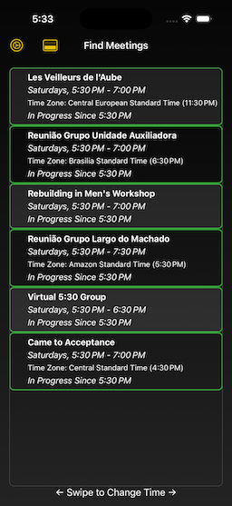
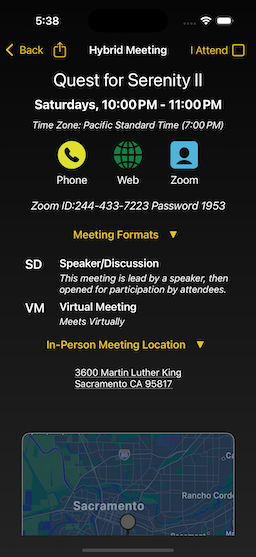

View on GitHub
View on GitHub
We Are Never Alone
An app that makes it simple to discover and attend virtual (and hybrid) NA meetings.
Overview
This app works by downloading a large list of virtual (and hybrid) meetings from a worldwide database, then presents them to the user, in a form that is directly useful to the user.
Get the application, itself
| The app is available for free, from the iOS/iPadOS/MacOS Apple App Store |
|---|
Usage
This app connects to an instance of LGV_MeetingServer, and downloads the entire dataset for all meetings that have a virtual component (Either full virtual, or hybrid Virtual/in-Person). It either does this, when starting “cold,” after 4 hours have passed, or at the user’s behest (by doing a “pull-to refresh” on the table).
It then converts the meeting start and end times to the user’s current timezone, and presents the meetings as a list, segregated by the weekday, and meeting start time. The user can use a couple of simple controls to select a day and start time for the meeting. This “control panel” is initially closed, but selecting the icon (the square one) in the top left of the navigation bar will open the panel, and the app will remember your choice (so the next time you start it, the panel is open, if that was how you left it).
Each meeting can be inspected individually, in order to see things like formats, in-person addresses, and virtual URLs. Also, if the user has an app installed (for example, Zoom), and the meeting has a join URL, the app will translate it to that app’s URL scheme, and open the app directly (without having to go through Safari).
Users can select a meeting as one they attend, which allows those meetings to be grouped into a separate screen.
The Specifics
The Screens
The Main Screen
| Control Panel Closed | Control Panel Open |
|---|---|
|  |
The Main Screen presents a list of meetings, surmounted by a segmented switch that allows the user to select a weekday (or mode), and a bar that allows the user to select a time.
The Attendance Screen
If the user has selected one or more meetings as ones they attend, a bar button enables in the Main Screen, allowing the user to bring in another screen, with just the meetings they marked as ones they attend.
The Meeting Inspector Screen

If the user selects a single meeting from the list, another screen is brought in, that displays specific and detailed information about that meeting.
The Settings Screen
This is a screen that is brought in from the Main Screen, that allows the user to specify various settings.
The About This App Screen
This is another screen that is brought in from the Settings Screen, that has information about the app, such as its specific version, and links to dependencies.
Dependencies
More Information
This is a page with a much more detailed explanation of the app.
This is the internal Technical Documentation for the Project
Privacy
This project collects absolutely no information at all, from anyone, at any time.
The “I Attend” data is kept local, on your device, using User Defaults (which means that deleting the app, also deletes this information, and it will not sync to your other devices).
Source Code
The GitHub Repository with the Source Code for This App
Presented By

Little Green Viper Software Development LLC
License
MIT License
Permission is hereby granted, free of charge, to any person obtaining a copy of this software and associated documentation files (the “Software”), to deal in the Software without restriction, including without limitation the rights to use, copy, modify, merge, publish, distribute, sublicense, and/or sell copies of the Software, and to permit persons to whom the Software is furnished to do so, subject to the following conditions:
The above copyright notice and this permission notice shall be included in all copies or substantial portions of the Software.
THE SOFTWARE IS PROVIDED “AS IS”, WITHOUT WARRANTY OF ANY KIND, EXPRESS OR IMPLIED, INCLUDING BUT NOT LIMITED TO THE WARRANTIES OF MERCHANTABILITY, FITNESS FOR A PARTICULAR PURPOSE AND NONINFRINGEMENT. IN NO EVENT SHALL THE AUTHORS OR COPYRIGHT HOLDERS BE LIABLE FOR ANY CLAIM, DAMAGES OR OTHER LIABILITY, WHETHER IN AN ACTION OF CONTRACT, TORT OR OTHERWISE, ARISING FROM, OUT OF OR IN CONNECTION WITH THE SOFTWARE OR THE USE OR OTHER DEALINGS IN THE SOFTWARE.